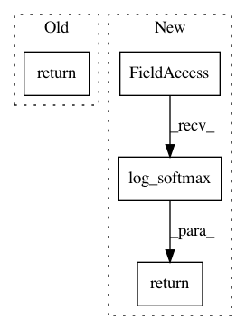

be59363ec171475fe839cd8d903b9eb8d92856ae,thumt/models/seq2seq.py,,model_graph,#,15
Before Change
logits = layers.nn.linear(outputs[:, -1, :], tgt_vocab_size, True,
scope="softmax")
return logits
// Prediction
logits = layers.nn.linear(outputs, tgt_vocab_size, True, scope="softmax")
logits = tf.reshape(logits, [-1, tgt_vocab_size])
After Change
logits = layers.nn.linear(outputs[:, -1, :], tgt_vocab_size, True,
scope="softmax")
return tf.nn.log_softmax(logits)
// Prediction
logits = layers.nn.linear(outputs, tgt_vocab_size, True, scope="softmax")
logits = tf.reshape(logits, [-1, tgt_vocab_size])
In pattern: SUPERPATTERN
Frequency: 4
Non-data size: 4
Instances
Project Name: THUNLP-MT/THUMT
Commit Name: be59363ec171475fe839cd8d903b9eb8d92856ae
Time: 2018-02-25
Author: playinf@stu.xmu.edu.cn
File Name: thumt/models/seq2seq.py
Class Name:
Method Name: model_graph
Project Name: mapbox/robosat
Commit Name: c738a069948a773d7e0cd9e0f4e68e0ac5fbc3a2
Time: 2018-10-02
Author: o@courtin.co
File Name: robosat/losses.py
Class Name: mIoULoss2d
Method Name: forward
Project Name: THUNLP-MT/THUMT
Commit Name: be59363ec171475fe839cd8d903b9eb8d92856ae
Time: 2018-02-25
Author: playinf@stu.xmu.edu.cn
File Name: thumt/models/rnnsearch.py
Class Name:
Method Name: model_graph
Project Name: THUNLP-MT/THUMT
Commit Name: be59363ec171475fe839cd8d903b9eb8d92856ae
Time: 2018-02-25
Author: playinf@stu.xmu.edu.cn
File Name: thumt/models/transformer.py
Class Name:
Method Name: model_graph